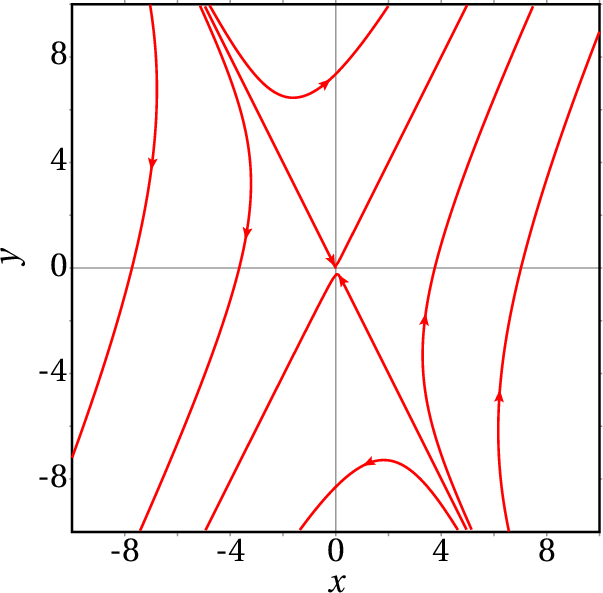

Em cada caso, use o Maxima para encontrar os valores e vetores
próprios do sistema. Diga que tipo de ponto de equilíbrio tem cada
sistema e represente os retratos de fase.
(a)
(b)
(c)
(a) No Maxima
E após traçar algumas curvas de evolução, o retrato de fase é
Os valores próprios são 3, com vetor próprio (1, 2), e −1, com vetor próprio (1,-2). O ponto de equilíbrio é ponto de sela.
(b)
Os valores próprios são -4, com vetor próprio (1, -1/ ), e −1, com vetor próprio (1, ). O ponto de equilíbrio é nó atrativo.

(c)
Existe um único valor próprio igual a 2, com vetor próprio (1, -1). O ponto de equilíbrio é nó impróprio repulsivo.

A figura mostra a curva de evolução hipotética de uma bola que cai em
queda livre e é disparada para cima novamente após ter batido no chão,
se não existisse nenhuma força dissipativa. A parte do gráfico para
valores positivos de
corresponde ao lançamento vertical de um
projétil, ignorando a resistência do ar. A parte do gráfico para
valores negativos de
corresponde à deformação elástica da bola
quando choca com o chão; durante o tempo de contacto com o chão,
admite-se que o movimento vertical da bola é um movimento harmónico
simples, sem dissipação de energia.
 Sabendo que a altura máxima atingida pela bola é
m e que a
deformação máxima quando a bola bate no chão é
cm, determine:
Sabendo que a altura máxima atingida pela bola é
m e que a
deformação máxima quando a bola bate no chão é
cm, determine:
(a) A velocidade máxima da bola ao longo do seu movimento.
(b) A frequência angular da deformação elástica da bola.
(c) O tempo que a bola permanece em contacto com o chão.
(a) No ponto de altura máxima, com coordenadas (10, 0) no espaço de fase, a energia mecânica é
e no ponto (0, ), onde a velocidade é máxima, a energia potencial é nula e a energia mecânica é então igual à energia cinética
(b) No ponto (−0.01,0), onde a deformação elástica é máxima, a energia cinética é nula e a energia mecânica é igual à energia potencial de um oscilador harmónico com constante elástica
A frequência angular de oscilação é então
(c) Como a curva de evolução da bola em contacto com o chão é metade de uma elipse, o tempo de contacto com o chão é metade do período do oscilador harmónico
Um cilindro de massa
está pendurado, na vertical, de uma mola
com constante elástica
, tal como na figura 6.2. Em
termos da altura
do centro de massa do cilindro, a partir da
posição em que a mola não está nem esticada nem comprimida, e
desprezando a resistência do ar:
(a) Encontre a equação de movimento, a partir da equação de
Lagrange, ou se preferir, a partir da segunda lei de Newton.
(b) Encontre o valor de
no ponto de equilíbrio.
(c) Mostre que o sistema pode escrever-se como sistema linear,
com uma mudança de variável de
para uma nova variável
e que
a equação de movimento em função de
é a equação de um oscilador
harmónico simples com frequência angular
.
(a) As energias cinética e potencial gravítica mais potencial elástica são
A equação de Lagrange é
e a equação de movimento é
(b) No ponto de equilíbrio e são nulas, ou seja
(c) Para que o sistema fosse linear, não podia aparecer o termo constante na equação de movimento. Introduz-se então uma nova variável tal que
ou seja, e, assim sendo, e a nova equação de movimento é
que é a equação de um oscilador harmónico simples, com frequência angular
Um cilindro tem base circular de área
cm2, altura
cm e massa volúmica
g/cm3. Como essa massa
volúmica é menor que a da água,
g/cm3, quando o
cilindro é colocado num recipiente com água flutua na superfície, com
uma parte
da sua altura por fora da água, como mostra a figura
(
). Empurrando o cilindro para baixo, começará a
oscilar com
a variar em função do tempo. Use o seguinte
procedimento para analisar a oscilação do cilindro:
(a) Sabendo que a força da impulsão da água, para cima, é
igual ao peso da água que ocupava a parte do volume do cilindro que
está dentro da água, ou seja,
(a) A força resultante é vertical e com valor (positivo para cima ou negativo para baixo) igual a:
em gramas vezes cm/s2 e em centímetros.
(b) A massa do cilindro, em gramas, é
e a equação de movimento é
(em cm/s2 e em cm).
(c) O valor de que faz com que a expressão da aceleração, seja nula é
(d) As equações de evolução são:
Define-se ; como tal, e as equações de movimento são equivalentes a
que correspondem a um sistema dinâmico linear com matriz
(e) A equação caraterística da matriz é . Os dois valores próprios são então números imaginários
Ou seja, o ponto de equilíbrio em cm é um centro e o movimento do cilindro é oscilatório com frequência angular igual a 8.250 e período (em segundos):
Num transformador há duas bobinas, a primária, com resistência e indutância e a secundária, com resistência e indutância . Quando se liga uma fonte na primeira bobina, produzindo corrente nela, na segunda bobina é induzida outra corrente . Quando se desliga a fonte na primeira bobina, as duas correntes começam a diminuir gradualmente, de acordo com as seguintes equações:
onde
é a indutância mútua entre as duas bobinas e as constantes
,
,
,
e
são todas positivas.
(a) Escreva as equações do transformador como equações de
evolução de um sistema dinâmico linear e encontre a matriz do sistema.
(b) Num transformador real,
é menor que
. Que
tipo de ponto de equilíbrio terá o sistema no caso
,
,
,
,
(usando unidades que conduzem a valores entre
0 e 10).
(c) Trace o retrato de fase do sistema no caso considerado na
alínea anterior.
(d) Os valores
,
,
,
e
,
correspondem a um caso hipotético que não pode descrever um
transformador real porque
. Diga que tipo de ponto seria
o ponto de equilíbrio nesse caso e explique porque esse sistema não
pode descrever um transformador real.
(a) Resolvem-se as duas equações do transformador para encontrar expressões para e . O comando coefmatrix pode ser usado para extrair a matriz num sistema de combinações lineares; é necessário indicar as expressões lineares e as variáveis:
(b) Substituem-se os valores dos parâmetros na matriz do sistema e determinam se os valores próprios:
Como os valores próprios são reais e ambos negativos, o ponto de equilíbrio é um nó atrativo.
(c) As componentes da velocidade de fase são os lados direitos das equações na lista sys
E traçando algumas curvas de evolução, incluindo as que passam pelos vetores próprios, obtém-se o seguinte retrato de fase:

(d) Com os valores dos parâmetros dados, a matriz do sistema e os seus valores próprios são:
O ponto de equilíbrio seria, nesse caso, um ponto de sela. Não pode descrever um transformador real, porque é um ponto instável, em que as correntes poderiam aumentar até valores infinitos.
Um isótopo radioativo A, decai produzindo outro isótopo radioativo B e este decai produzindo um isótopo estável C.
Sendo e o número de isótopos das espécies A e B existentes em qualquer instante , as suas derivadas em ordem ao tempo verificam as seguintes equações:
onde
é a constante de decaimento dos isótopos A (probabilidade
de que um isótopo da espécie A se desintegre durante uma unidade de
tempo) e
é a constante de decaimento dos isótopos B.
(a) Determine a matriz do sistema e os seus valores próprios.
(b) Tendo em conta que as constantes de decaimento
e
são positivas, explique que tipo de ponto pode ser o ponto de
equilíbrio para os possíveis valores dessas constantes.
(c) Se num instante inicial o número de isótopos A, B e C
forem, respetivamente,
,
e
, onde
é o número de Avogadro, quais serão
os valores de
,
e
após um tempo muito elevado?
(a) A matriz do sistema e os seus valores próprios são:
(b) Existem dois casos diferentes. Primeiro, se e , são diferentes, há dois valores próprios, reais e negativos, ou seja, o ponto de equilíbrio é um nó atrativo. Mas se as duas constantes e são iguais, existe um único valor próprio, real e negativo, e o ponto de equilíbrio é um nó impróprio atrativo.
(c) Como o ponto de equilíbrio na origem é atrativo, após um tempo elevado o sistema aproxima-se desse ponto de equilíbrio, ou seja, e . Se já não existem mais isótopos das espécies A nem B, isso quer dizer que todos os isótopos iniciais transformaram-se na espécie C e, como tal, será igual ao número total de isótopos das 3 espécies no início, .
No sistema dinâmico com equações de evolução:
onde é um parâmetro real com qualquer valor entre e , determine os intervalos de valores de onde o ponto de equilíbrio ( ) pode ser nó ou foco, atrativo ou repulsivo, centro ou ponto de sela.
Existem várias formas possíveis de resolver este problema; um método simples é o seguinte. Trata-se de um sistema linear com matriz:
com traço e determinante iguais a:
A relação entre o traço e o determinante é . Num plano em que o eixo das abcissas representa o traço e o eixo das ordenadas representa o determinante , esta relação é uma reta com declive igual a 1, que corta o eixo das abcissas em .
A curva que delimita a região dos focos da região dos nós é a parábola , que corta a reta nos dois pontos onde:
O gráfico seguinte mostra a reta e a parábola:
O ponto de equilíbrio é ponto de sela, se o traço for menor que , nó atrativo, se o traço estiver entre e , foco atrativo, se o traço estiver entre e 0, centro se o traço for nulo, foco repulsivo, se o traço estiver entre 0 e ou nó repulsivo, se o traço for maior que . Tendo em conta que é igual ao traço, o resultado é então:
Note-se que quando , o ponto é nó impróprio, que já foi incluído nas categorias acima. Se , o determinante é zero, que indica que o sistema se reduz a uma única equação, , que representa um sistema com espaço de fase de dimensão 1, em que = 0 é ponto de equilíbrio atrativo; nesse caso a outra equação de evolução mostra que é igual a mais uma constante.